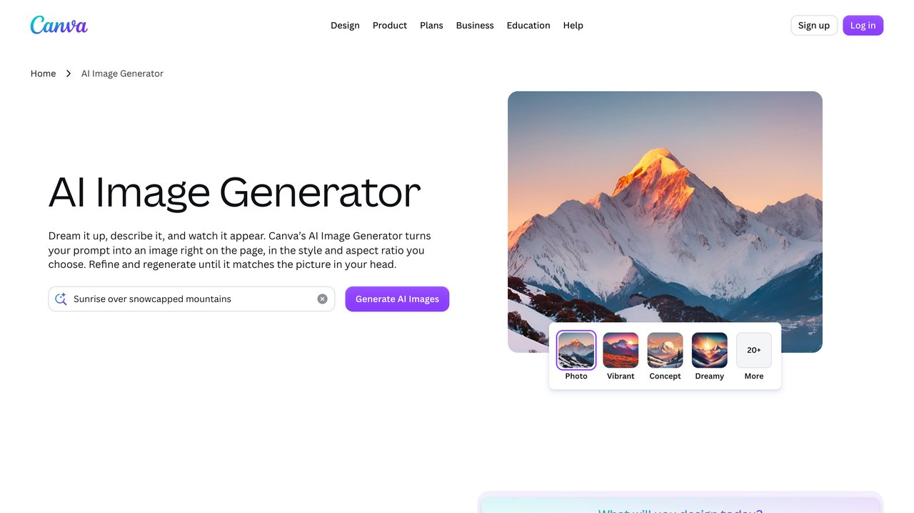

La IA puede quitarte horas de trabajo mecánico en redes sociales, pero también es la forma más rápida de que tu cuenta suene exactamente igual que otras mil cuentas que usan el mismo prompt. La diferencia está en qué parte del proceso delegas y cuál conservas tú, una distinción que se vuelve más importante cuanto más rápido crece el volumen de contenido generado por IA en cada red social.
Lo que sí conviene automatizar
Pedir a la IA que resuma qué se está hablando en tu sector esta semana.
A partir de una idea tuya en dos líneas, no al revés.
De un artículo a un hilo, de un hilo a una descripción de vídeo.
De publicaciones ya aprobadas por ti.
Cada uno de estos puntos comparte una característica común y fácil de reconocer una vez que la ves: son tareas mecánicas donde el valor está en la ejecución rápida y repetible, no en el criterio o la experiencia personal de quien las hace. Investigar tendencias es buscar y resumir información ya publicada, no decidir qué opinas tú sobre ellas ni qué postura tomar frente al debate del momento. Adaptar un formato es reestructurar texto ya existente en otro contenedor, no crear una idea nueva desde cero que no existiera antes. Es esa distinción — ejecución mecánica frente a criterio propio — la que define casi todo lo demás en esta guía.
Lo que pierde valor si lo automatizas del todo
Las opiniones personales, las respuestas a comentarios que requieren criterio o tacto, y cualquier contenido que dependa de tu experiencia directa con algo, pierden su razón de ser si los genera un modelo sin tu input real. La gente nota cuándo un texto "suena a IA" precisamente porque no aporta nada que no pudiera generar cualquier otra cuenta del mismo sector usando exactamente el mismo prompt genérico.
Hay un motivo estructural detrás de esto: un modelo de lenguaje genera la continuación estadísticamente más probable dado un tema, lo que por definición tiende hacia lo genérico y consensuado, no hacia lo distintivo. Si dos personas piden a la misma herramienta "escribe una publicación sobre productividad", el resultado se parecerá mucho más entre sí que si cada una escribiera desde su propia experiencia. Cuantas más cuentas usan la IA de la misma forma superficial, más se homogeniza el contenido de una red entera, y más destaca, precisamente por contraste, cualquier cuenta que sí se moleste en aportar una perspectiva propia real basada en experiencia directa.
Regla práctica: usa la IA para quitarte el trabajo de teclado, no para que decida qué piensas o qué vale la pena decir. El criterio y la anécdota real siguen siendo tuyos.
Cómo evitar que "suene a IA"
- Dale a la IA tus propias palabras o notas de voz como punto de partida, no un tema en abstracto
- Pide explícitamente que evite frases genéricas de apertura ("En el mundo actual...", "¿Sabías que...?")
- Edita el resultado con ejemplos y detalles concretos que solo tú conoces
- Varía la estructura entre publicaciones; un patrón repetido se nota rápido
Un quinto punto que se suele pasar por alto: revisa el vocabulario. Ciertas palabras y construcciones aparecen con muchísima más frecuencia en texto generado por IA que en el habla natural — "además", "por otro lado", "en resumen" como muletillas de transición, adjetivos dobles ("robusto y eficiente"), o cerrar siempre con una pregunta retórica al lector. Ninguna de estas construcciones es mala por sí sola, pero su repetición sistemática es una de las señales más reconocibles de un texto sin editar.
Ejemplos de instrucciones que sí funcionan
La diferencia entre un prompt vago y uno útil para redes se nota especialmente aquí, porque el contexto concreto que le des determina casi todo el resultado final que vas a obtener:
Instrucción pobre: "Escribe un post de LinkedIn sobre mi negocio de consultoría."
Instrucción mejor: "Te cuento algo que me pasó esta semana con un cliente: [dos o tres frases contando la anécdota real]. Escribe un post de LinkedIn a partir de esto, con un tono directo, sin frases de apertura genéricas, terminando con una pregunta concreta relacionada con la anécdota, no una pregunta retórica vacía."
La diferencia no está en la "calidad de la IA": el mismo modelo, con la misma capacidad, produce resultados radicalmente distintos según cuánto contexto real le des para trabajar. El tiempo que inviertes en dar ese contexto es, casi siempre, menor que el tiempo que ahorrarás en no tener que reescribir un resultado genérico desde cero.
Un caso concreto: de una idea a cuatro publicaciones
Un consultor de finanzas personales tiene una idea concreta que le surgió al hablar con un cliente: "mucha gente confunde ahorrar con invertir, y por eso nunca da el paso de invertir." Es una idea con sustancia real, nacida de una conversación concreta con una persona real, no un tema genérico buscado en una lista de ideas para redes sacada de cualquier sitio.
El primer paso es grabar esa idea en una nota de voz de un minuto, contándola tal cual se le ocurrió, con el ejemplo real del cliente si es posible compartirlo de forma anónima. A partir de esa transcripción, se generan cuatro versiones distintas: para LinkedIn, un post de varios párrafos explicando la diferencia con el ejemplo del cliente (anonimizado) y cerrando con una pregunta sobre la experiencia de otros lectores; para X, un hilo corto de tres o cuatro tuits con la misma idea condensada, empezando por la frase más provocadora del argumento; para Instagram, una imagen simple con la frase clave y una descripción breve invitando a guardar el post para releerlo; y, si tiene newsletter, un párrafo de apertura que retoma la misma idea con más profundidad.
Lo importante de este ejemplo no es el tema, sino el patrón: una única idea real, con una anécdota concreta detrás, produce cuatro piezas de contenido distintas entre sí, cada una adaptada a su plataforma, sin sonar a copia de una a otra. Comparado con pedirle a la IA "dame ideas para publicar esta semana" y generar cuatro publicaciones sobre temas genéricos distintos, este enfoque produce contenido más coherente y más fácil de mantener con voz propia.
Cómo medir si el contenido generado con IA está funcionando
Más allá de las métricas obvias (alcance, interacciones), hay una señal más fiable de que el enfoque está funcionando bien: si las conversaciones que genera un post en los comentarios se parecen a una conversación real que tendrías tú mismo sobre el tema, vas bien encaminado. Si los comentarios son genéricos ("¡Gran post!", "Totalmente de acuerdo") sin ninguna pregunta o matiz específico sobre lo que dijiste, es una señal de que el contenido no dio pie a una conversación real, sea quien sea quien lo escribió.
Otra señal útil, más a largo plazo: si empiezas a recibir mensajes directos o comentarios que hacen referencia a algo muy concreto que dijiste (no al tema en general, sino a un detalle específico de una publicación), es una prueba bastante clara de que tu contenido se está diferenciando lo suficiente como para ser memorable, en vez de mezclarse con el resto del contenido genérico de la plataforma.
«Automatizar lo repetitivo y mecánico, mantener el criterio humano en lo que tiene matiz: ese es el patrón que se repite en todos los casos reales que funcionan.»
Pega la transcripción de tu nota de voz o tu idea en dos líneas donde pone [IDEA] — esto sustituye al "dame ideas para esta semana" genérico del ejemplo de arriba.
«Tengo esta idea, tal cual se me ocurrió: [IDEA]. Quiero cuatro piezas de contenido distintas a partir de ella, no la misma frase repetida en cuatro formatos:
1. LinkedIn: un post de 3-4 párrafos que explique la idea con un ejemplo concreto (invento uno si no te doy ninguno) y cierre con una pregunta a los lectores.
2. X/Twitter: un hilo de 3-4 tuits, empezando por la frase más directa o provocadora del argumento, no por la introducción.
3. Instagram: el texto de una imagen simple (una frase clave de máximo 12 palabras) más una descripción breve que invite a guardar el post.
4. Newsletter: un párrafo de apertura que retome la misma idea con más profundidad y matices que las versiones cortas.
No repitas la misma frase textual en más de un formato — cada pieza tiene que sonar escrita para su plataforma, no copiada y recortada de otra.»

El mismo contenido no funciona igual en cada red
Pedirle a la IA "adapta esto a mis redes" sin más da un resultado genérico. Cada plataforma tiene su propio formato y tono esperado:
Tono profesional pero conversacional. Invitar a comentar una experiencia rinde más que pedir un "me gusta".
Límite de 280 caracteres en cuentas estándar (las cuentas Premium pueden publicar textos mucho más largos, hasta 25.000 caracteres según la ayuda de X, pero el gancho de la primera línea sigue mandando). El gancho de la primera línea importa más que en cualquier otra red.
El texto acompaña a la imagen, no al revés. Cierra invitando a guardar o escribir por mensaje directo.
Cuando le pidas a la IA un borrador, dile para qué red es específicamente (no "redes sociales" en general) y qué acción quieres que haga quien lo lea: eso cambia tanto la longitud como el cierre del texto. Los textos de tamaño medio (varios párrafos cortos) en LinkedIn suelen tener más alcance que una sola frase suelta, mientras que en Instagram funciona mejor cerrar con una llamada a guardar el post o a escribir por mensaje directo, más que a comentar.
Un flujo de trabajo realista
Graba una nota de voz de dos minutos contando tu idea tal cual te sale, sin pulir. Pasa esa transcripción a la IA pidiendo un primer borrador en el formato que necesites. Revisa el resultado, corrige lo que suene genérico y añade el detalle concreto que lo hace tuyo. Este orden (tu idea primero, la IA después) es la diferencia entre ahorrar tiempo de verdad y publicar contenido intercambiable con el de cualquier otra cuenta que siga el proceso al revés, empezando por pedirle un tema a la IA en vez de partir de algo que de verdad te pasó.
Este flujo funciona igual de bien para una publicación suelta que para un mes entero de contenido. Si sabes que tienes cuatro o cinco ideas para las próximas semanas, graba una nota de voz por cada una (aunque sea de un minuto) el mismo día que se te ocurren, en vez de intentar recordarlas luego. La materia prima real — tu forma de pensar y hablar sobre el tema en el momento en que te interesa — es mucho más valiosa que cualquier cosa que puedas reconstruir después desde una idea abstracta apuntada en una lista de temas pendientes.
Calendario, reutilización y voz según la etapa
Más allá del texto principal, la IA también ayuda con las partes más mecánicas de cada publicación, aunque aquí conviene revisar el resultado con más cuidado que en el texto principal, porque son detalles fáciles de automatizar mal sin que se note a simple vista: hashtags relevantes (un asistente puede sugerirlos, pero revisa que sean los que realmente usa tu audiencia — un hashtag técnicamente relacionado pero que nadie sigue en la práctica no aporta nada), texto alternativo de imágenes para accesibilidad (una tarea perfecta para delegar por completo, ya que es puramente descriptiva y no requiere criterio personal), y primeras líneas pensadas como gancho independiente en plataformas donde solo se muestra una línea antes de "ver más", no como el inicio de una frase que se corta a mitad.
Para quien publica con regularidad, un calendario editorial ayuda a no depender de tener una idea nueva cada día. La IA puede ayudar a construirlo de forma útil si se usa para lo que es bueno (estructurar y organizar) y no para lo que no debería hacer (decidir qué es interesante para tu audiencia específica, algo que tú conoces mejor que cualquier modelo entrenado con datos genéricos). Un patrón sencillo que funciona bien en la práctica: al principio de cada mes, dedica veinte minutos a listar (en voz o por escrito, sin pulir) todas las ideas, anécdotas o temas que te han pasado por la cabeza últimamente. Pide a la IA que organice esa lista en un calendario, agrupando ideas parecidas, sugiriendo qué formato conviene a cada una, y repartiéndolas a lo largo del mes.
Revisa el calendario a mitad de mes, no solo al principio: es habitual que surja una noticia relevante del sector o una anécdota nueva que merece más la pena publicar que algo planificado con semanas de antelación. Un calendario asistido por IA debería ser una guía flexible que ahorra el trabajo de partir de cero cada día, no un guion rígido que hay que seguir aunque haya aparecido algo mejor que contar.
Una de las formas más eficientes de usar la IA en redes no es generar contenido nuevo, sino multiplicar el que ya tienes. Un artículo largo, una guía, o incluso una respuesta detallada que diste una vez a un cliente contiene generalmente varias ideas independientes que se pueden convertir en publicaciones separadas para distintas plataformas. El proceso práctico: pide a la IA que lea el contenido original y extraiga entre tres y cinco ideas independientes que podrían funcionar como publicaciones por sí solas (no resúmenes del conjunto, sino fragmentos con entidad propia), y luego, para cada idea, pide una adaptación al formato de la plataforma concreta donde la vayas a publicar. Este enfoque reduce el problema de "no tengo ideas para publicar" convirtiéndolo en "ya tengo contenido, solo hay que extraerlo y adaptarlo", un trabajo mucho más mecánico y por tanto más delegable. Con el tiempo, cada pieza larga que produces se convierte en una reserva de varias publicaciones futuras, en vez de un esfuerzo aislado que se usa una sola vez y se olvida.
El nivel de automatización razonable no es el mismo para una cuenta que está empezando que para una con una audiencia ya consolidada. Al principio, cuando aún nadie tiene expectativas formadas sobre tu voz, hay más margen para experimentar con ayuda de la IA, precisamente porque los errores tienen menos coste — pocas personas los ven todavía. Una vez que una cuenta tiene una audiencia que ya reconoce un tono y un estilo concretos, cualquier desviación notable se percibe con más claridad, y ahí conviene ser más estricto revisando cada pieza, no menos.
Esto lleva a una recomendación práctica poco intuitiva: cuanto más éxito tiene una cuenta, más tiempo de revisión humana merece cada publicación, no menos. Es tentador pensar que una cuenta grande "ya tiene el sistema rodado" y puede automatizarse más, pero es justo al revés: una audiencia grande nota antes las inconsistencias, y el coste reputacional de una publicación que suena falsa es mayor cuantas más personas la vean. Un indicador práctico: si al leer un borrador generado con IA no puedes decir con seguridad si suena a ti o a cualquier otra cuenta de tu sector, todavía no has llegado al punto donde puedes relajar la revisión.
Cuándo NO usar IA para redes sociales
- Gestión de crisis o quejas públicas: necesita matices de tono que dependen del contexto exacto; un error aquí es visible para todo el mundo
- Anuncios importantes de la marca: lanzamientos, cambios de precio, decisiones sensibles — el tono y el timing importan más que la velocidad
- Interacción uno a uno con clientes conocidos: alguien con relación contigo nota inmediatamente si "hablas distinto"
En estos casos, la IA todavía puede ayudar de forma indirecta (organizar ideas, revisar un borrador que tú ya escribiste), pero la redacción final y la decisión de qué decir deberían quedarse contigo.
Instagram Agent Skill: 13 skills de Claude para llevar tu Instagram
Son 13 skills gratuitas (licencia MIT) para Claude, del mismo autor que YouTube Agent Skill y Arena. Cada una hace una parte del trabajo de una cuenta:
/ig-reel: De una idea a un reel: tres ganchos de 26 fórmulas puntuadas, el guion, el texto en pantalla y los tiempos./ig-viral: Busca lo que funciona en tu nicho, lo ordena por cuánto supera lo normal de cada cuenta y te dice la fórmula./ig-caption: El pie de foto, revisado: te enseña los 125 caracteres que se ven antes de pulsar «más»./ig-carousel: La portada que hace deslizar, el texto de cada diapositiva y los archivos de 1080x1350./ig-story: La secuencia de historias del día y qué sticker usar para cada cosa./ig-profile: Puntúa tu perfil sobre 100 y te lo reescribe empezando por lo que más falla./ig-plan: La semana: qué publicar, en qué formato, cuándo y con qué 10 cuentas interactuar./ig-human: Quita lo que suena a IA de tus textos (caracteres invisibles, rayas, 154 muletillas)./ig-comment: Comentarios para publicaciones de otros, según el tipo de publicación. Nunca «🔥🔥🔥»./ig-reply: Ordena los comentarios de tus publicaciones (palabra clave, posible cliente, dudas…) y escribe las respuestas./ig-dm: El mensaje con la palabra clave, el primer mensaje, la propuesta de colaboración y dos seguimientos./ig-repurpose: De un vídeo, pódcast o boletín, una semana de reels y carruseles./ig-audit: Repasa lo que ya has subido y lo ordena por envíos y alcance, no por visitas.
Dónde conseguirlo: Jakeschincariol/instagram-agent-skill · repositorio oficial ↗
La forma más fácil: pega esto en Claude Code
https://github.com/Jakeschincariol/instagram-agent-skill
Install these skills, then confirm /ig-reel works.
Lo honesto: escriben, puntúan y analizan, pero publicar y responder lo haces tú desde Instagram. Las notas y fórmulas son orientativas y no garantizan visitas.
11 skills gratis para llevar tu LinkedIn con Claude
LinkedIn Agent Skill es un paquete de 11 skills para Claude con licencia MIT, sin registro, sin clave y sin conectar nada a tu cuenta. Escriben y analizan; publicar siempre lo haces tú.
Instalación
- Pega en Claude el enlace del repositorio y pídele que instale la skill, o en Claude Code usa
/plugin marketplace add Jakeschincariol/linkedin-agent-skill. - Dedica diez minutos al archivo
voice.md: pega tres posts tuyos y pide a Claude que lo rellene. Todas las skills lo leen.
Las más útiles
/li-post: de una idea a un post con tres ganchos basados en 21 fórmulas./li-profile: puntúa tu perfil sobre 100 con una rúbrica de 12 partes y lo reescribe./li-reply: clasifica los comentarios de tus posts y responde por orden./li-human: dos scripts de Python que eliminan caracteres invisibles, guiones largos y 113 expresiones típicas de IA.
Lo honesto: si no usas Claude Code puedes pegar un SKILL.md en el chat, pero pierdes los scripts del humanizador. Y si te saltas el archivo de voz, los textos saldrán genéricos.
Repositorio: github.com/Jakeschincariol/linkedin-agent-skill
11 skills gratis para tu canal de YouTube
YouTube Agent Skill son 11 skills para Claude con licencia MIT, sin registro ni clave, que ayudan a llevar un canal. Escriben y analizan; subir los vídeos lo haces tú.
Instalación
- Pega el enlace del repositorio en Claude y pídele que la instale, o en Claude Code:
/plugin marketplace add Jakeschincariol/youtube-agent-skill. - Rellena el archivo
voice.md(o pásale a Claude tres vídeos tuyos para que lo escriba). Aquí importa más que en ningún sitio, porque el guion lo tienes que decir en voz alta.
Las más útiles
/yt-script: de una idea a un guion, con cinco ganchos de 21 fórmulas puntuados./yt-package: revisa título y miniatura juntos para que no digan lo mismo dos veces ni se corten./yt-retention: lee la exportación de retención y señala la fuga del gancho, los desplomes y qué cambiar./yt-shorts: encuentra Shorts dentro de un vídeo largo y escribe una primera frase nueva para cada uno.
Hay más: lista de cortes a partir de la transcripción, comentarios, plan semanal, SEO, capítulos e ideas que funcionan en tu nicho.
Lo honesto: las seis herramientas en Python, que son lo mejor del paquete, solo funcionan en Claude Code.
Repositorio: github.com/Jakeschincariol/youtube-agent-skill
50 skills de marketing gratis para Claude
Marketing Skills es una colección gratuita (MIT) de skills para Claude Code y otros agentes de IA, pensada para fundadores y profesionales de marketing. Al revisar el repositorio contamos 50 skills, agrupadas en SEO y contenido, conversión, textos, anuncios y medición, crecimiento, ventas y estrategia.
Instalación
- Con la herramienta
skills:npx skills add coreyhaines31/marketingskillsinstala todas (también puedes elegir solo algunas). - Como plugin de Claude Code:
/plugin marketplace add coreyhaines31/marketingskills.
Por dónde empezar
- Usa primero la skill
product-marketing: guarda qué vendes, a quién y cómo te posicionas. Todas las demás la consultan antes de trabajar. - Después prueba
copywritingpara tu página principal,seo-auditpara ver por qué no apareces en Google ypricingpara revisar tus precios. - Para campañas, tienes skills de emails, email en frío, redes sociales y anuncios.
Lo honesto: funcionan mejor en agentes como Claude Code que en el chat. El proyecto incluye integraciones con herramientas de socios que lo financian; están señaladas y son opcionales. Y ninguna skill sustituye conocer a tus clientes.
Repositorio: github.com/coreyhaines31/marketingskills
Postiz: programa tus publicaciones en todas las redes
Crear contenido con IA es solo la mitad; la otra es publicarlo con constancia. Postiz es una herramienta de código abierto (AGPL-3.0) para programar publicaciones en redes sociales. En El Telar la usamos para nuestro propio calendario.
Qué ofrece
- Calendario para programar publicaciones en Instagram, TikTok, YouTube, LinkedIn, Facebook, Threads, Bluesky, Pinterest, Reddit, Mastodon y otras redes.
- Funciones de IA para ayudarte con los textos.
- Analíticas de rendimiento.
- Colaboración en equipo: invitar a tu equipo a comentar y programar publicaciones.
- API para automatizar con n8n, Make o Zapier.
Dos formas de usarlo
- Postiz Cloud: versión gestionada en postiz.com, de pago.
- Autoalojado: instalas la edición de código abierto en tu ordenador o servidor (normalmente con Docker), gratis, y conectas tus cuentas.
Lo honesto: la versión gratuita requiere conocimientos técnicos y mantenimiento, y cada red tiene sus propias reglas para conectar cuentas (por ejemplo, Instagram exige cuenta profesional). Programar no sustituye responder a tu comunidad.
Código: github.com/gitroomhq/postiz-app
Preguntas frecuentes
No aceptamos patrocinios de plataformas sociales ni de herramientas de programación de contenido, para poder recomendar con criterio propio sin ningún conflicto de intereses comercial de por medio.
Etiquetar contenido hecho con IA: qué dice la norma europea en 2026
Hasta ahora «¿debo avisar de que uso IA?» era una cuestión de estilo. En la Unión Europea empieza a ser también una cuestión legal en algunos casos. Nuestra guía del AI Act explicado recoge que las normas de transparencia del reglamento se aplican desde el 2 de agosto de 2026. En concreto, el artículo 50 obliga a quien publica (el «responsable del despliegue») a:
- Imágenes, audio o vídeo que parezcan reales y estén generados o manipulados con IA (los llamados deepfakes): indicarlo. Si es una obra evidentemente artística, creativa, satírica o de ficción, basta con avisar de que existe ese contenido de forma que no estorbe la obra.
- Textos generados con IA publicados para informar al público sobre asuntos de interés público: indicarlo, salvo que una persona los haya revisado o controlado editorialmente y alguien asuma la responsabilidad editorial.
Lo que esto significa en la práctica para una cuenta normal: si usas IA para escribir un borrador que tú reescribes con tu criterio, o para el texto alternativo de una imagen, probablemente no estás en ninguno de esos supuestos. Si generas una foto o un vídeo realista de una persona o un suceso que no existió, sí. No somos abogados y la aplicación a cada caso depende de detalles; lee el artículo 50 en el texto oficial del Reglamento (UE) 2024/1689 en EUR-Lex y consulta con un profesional si publicas de forma comercial o sobre temas sensibles.
Con independencia de la ley, una regla de higiene que te ahorra problemas: no publiques nunca imágenes realistas de personas reales generadas con IA sin su consentimiento, y no inventes testimonios, reseñas ni cifras. Es lo que más rápido destruye la confianza de una audiencia.
Un informe mensual de tu cuenta en 30 minutos
La IA es muy útil para ordenar lo que ya ha pasado en tu cuenta. Sin conectar nada automáticamente, puedes hacerlo así una vez al mes:
- Exporta o apunta las métricas de tus últimas 15-20 publicaciones: formato, tema, alcance, guardados, compartidos y comentarios. Copiar a mano a una hoja de cálculo basta.
- Pega la tabla en tu asistente y pide: «Ordena por guardados y compartidos por cada 1.000 de alcance. ¿Qué tienen en común las cinco mejores y las cinco peores? Cita las filas en las que te basas».
- Pide hipótesis, no conclusiones: con una muestra tan pequeña, el modelo solo puede sugerir qué probar. Decide tú qué experimento haces el mes siguiente.
- Comprueba las cuentas a mano: si el modelo dice «los viernes funcionan mejor», verifica que hay suficientes publicaciones en viernes para afirmarlo.
- Guarda el resultado en un documento fijo, con la fecha, para comparar en tres meses.
Para el contenido en sí, recuerda la regla de la guía: tu idea primero. Si programas con herramientas, n8n puede encargarse del traslado mecánico (por ejemplo, de una hoja de ideas aprobadas a tu programador) y la guía del correo cubre cómo ordenar los mensajes que te llegan. Para imágenes, tienes la comparativa de generación de imágenes con IA.